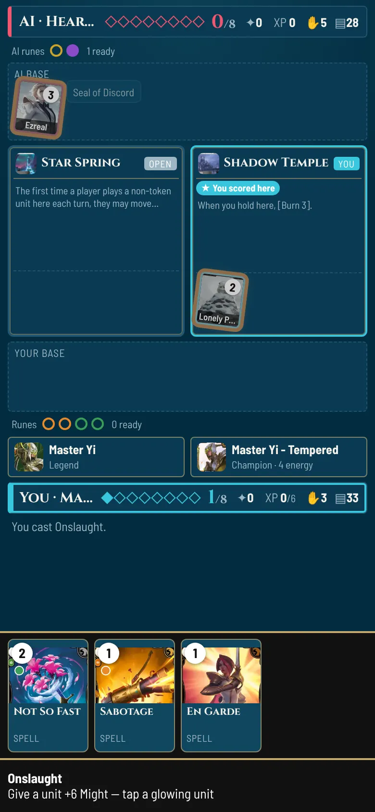
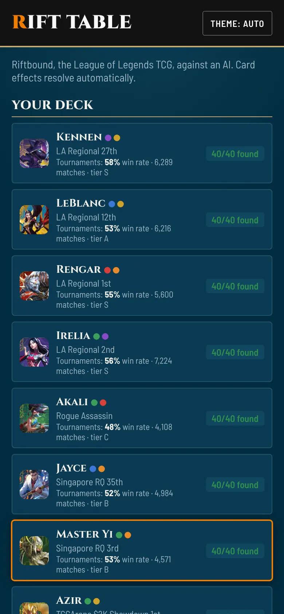
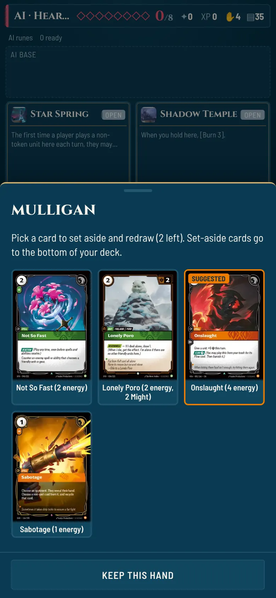
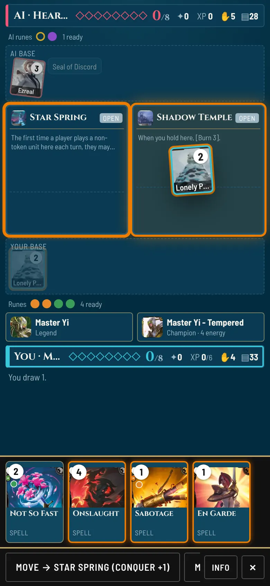
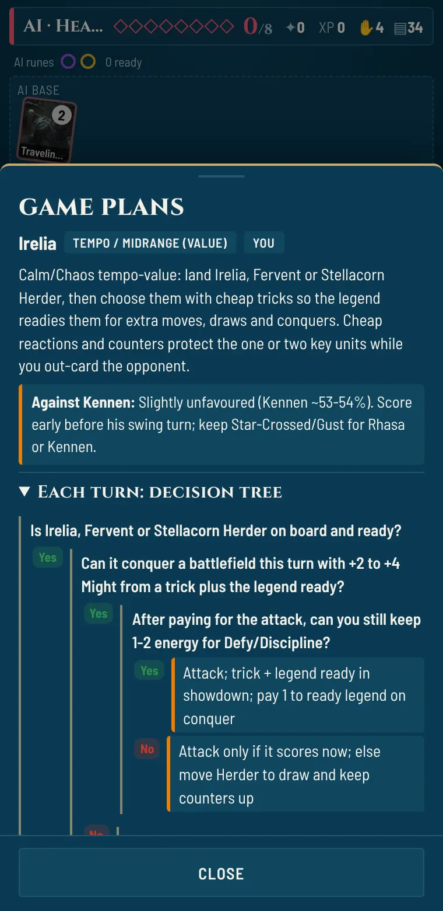
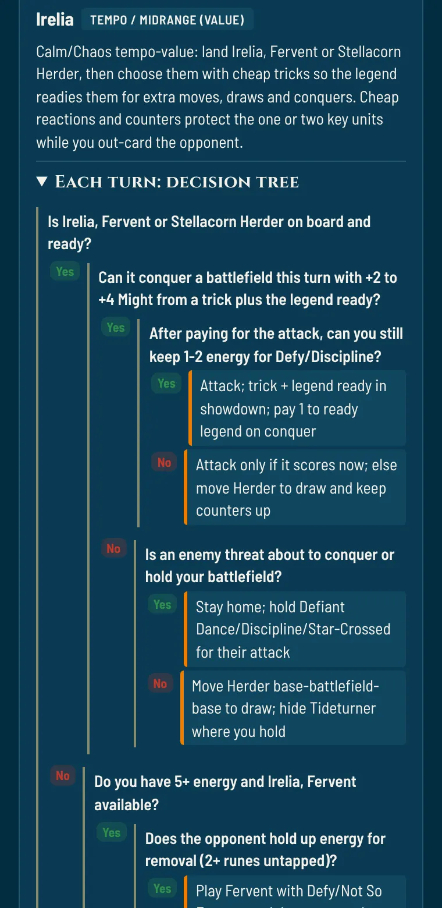

Rift Table
Play Riftbound, the League of Legends trading card game, against an AI on your phone, and see what 210,000 simulated games say about the real tournament metagame.

The game
A single self-contained HTML file built for phones: no install, works offline after the first load. Every card effect resolves automatically, optional effects ask first, and the post-game review is built from what actually happened in your game.





Full rules
Showdowns, Hidden, Ambush, Equip, Deploy, Legion, Level, Empower, burn-out and the final-point rule, checked against the October 2026 Core Rules with regression tests.
An AI with a plan
Each deck's AI follows a researched pro plan: mulligan, card priorities, attack style, which reactions to hold for your turn and when a trick actually flips a fight.
Learn as you play
Combat reports, a clear points tracker, keyword badges, the matchup note for your opponent and a short review of the moments that decided the game.
The research
The project treats the metagame like a market: decks are assets, matchups are a payoff matrix and the simulator is a pricing model that has to be validated out of sample. Five pre-registered hypotheses test whether the simulator ranks decks like real tournaments, whether its matchups beat a Bradley–Terry baseline, and whether the metagame follows replicator dynamics.
Run it yourself
python3 tools/build.py # assemble riftable.html node test/sim.js 30 && node test/rules.js # smoke games and rules checks node quant/harness.js --pairs-per-matchup 1000 # 210,000 seeded, mirrored games python3 quant/snapshot.py # archive today's meta snapshot